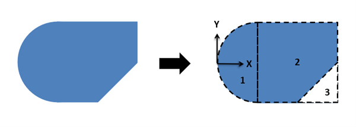
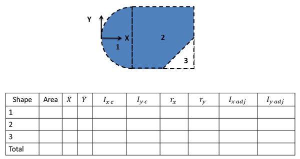

Area Moments of Inertia via Method of Composite Parts
As an alternative to integration, both area and mass moments of inertia can be calculated via the method of composite parts, similar to what we did with centroids. In this process we will break down a complex shape into simple parts, look up the moments of inertia for these parts in a table, adjust the moments of inertia using the parallel axis theorem, and finally add the adjusted values together to find the overall moment of inertia. This method is known as the method of composite parts.
A key part to this process that was not present in centroid calculations is the adjustment for position via the parallel axis theorem. As discussed on the previous page, the area and mass moments of inertia are dependent upon the chosen axis of rotation. Moments of inertia for the parts of the body can only be added together once they are taken about the same axis. The moments of inertia in the table are generally listed relative to that shape's centroid though. Because each part has its own individual centroid coordinate, we cannot simply add these numbers. Instead we will use the parallel axis theorem to adjust the moments of inertia so that they are all taken about some standard axis or point, then we can add the moments of inertia together. This page will focus on using the method of composite parts to find area moments of inertia, while the following page will focus on using the method of composite parts to find the mass moment of inertia.
Using the Method of Composite Parts to Find the Area Moment of Inertia
To find the area moment of inertia of a body using the method of composite parts, you need to start by breaking your area down into simple shapes. Make sure each individual shape is available in the moment of inertia table in the right sidebar, and make sure to label the pieces in your diagram. As you did with centroids, you can treat holes or cutouts as negative areas.

First, you will want to identify the area of each piece, including the negative areas for holes or cutouts. Next, you will want to identify the location of the centroid of each piece as well as the centroid location of the composite body as a whole if that is not given in the problem. So far, this is just the same process we used to find the centroid of a composite body.
Next we will look up the moments of inertia for our individual shapes in the moment of inertia table. To find these values you will plug numbers for height, width, radius, etc. into formulas on the moment of inertia table. Do not use these formulas blindly though as you may need to mentally rotate the body if the orientation of the shape in the table does not match the orientation of the shape in your diagram. These represent the moment of inertia for each shape about its own center point, which are usually denoted in this books as Ixc and Iyc in the calculations.
Before we can add all these moments of inertia together, we will need to adjust each of these using the parallel axis theorem so that the moments of inertia are all taken about the same axis. For bending or torsion applications, this shared axis will be the x and/or y axis going through the centroid for the shape combined shape, which you calculated earlier.
For this whole process we are going to create a table to keep track of values. Devote a row to each part that your numbered earlier, and include a final "total" row that will be used for some values. Most of the work of the method of composite parts is filling in this table.

The columns will vary slightly with what you are looking for, but you will generally need the following.
- The area of each part.
- The x and y centroid locations for each part.
- The unadjusted moment of inertia values for each of the pieces (Ixc and/or Iyc). These will be the values calculated using the moment of inertia equations from the tables.
- The adjustment distances (rx and/or ry) for each shape. For this value you will want to determine how far the x-axis or y-axis needs to move to go from the centroid of the part to location we are taking the moment of inertia about for the whole body (usually the centroid of the overall shape).
- Finally, you will have a column of the adjusted moments of inertia (Ixadj and/or Iyadj). Take the original moment of inertia about the centroid value (Ixc or Ixc), then simply add your area times r value squared with the parallel axis theorem.
The overall moment of inertia of your composite body is simply the sum of all of the numbers in the adjusted moment of inertia columns.